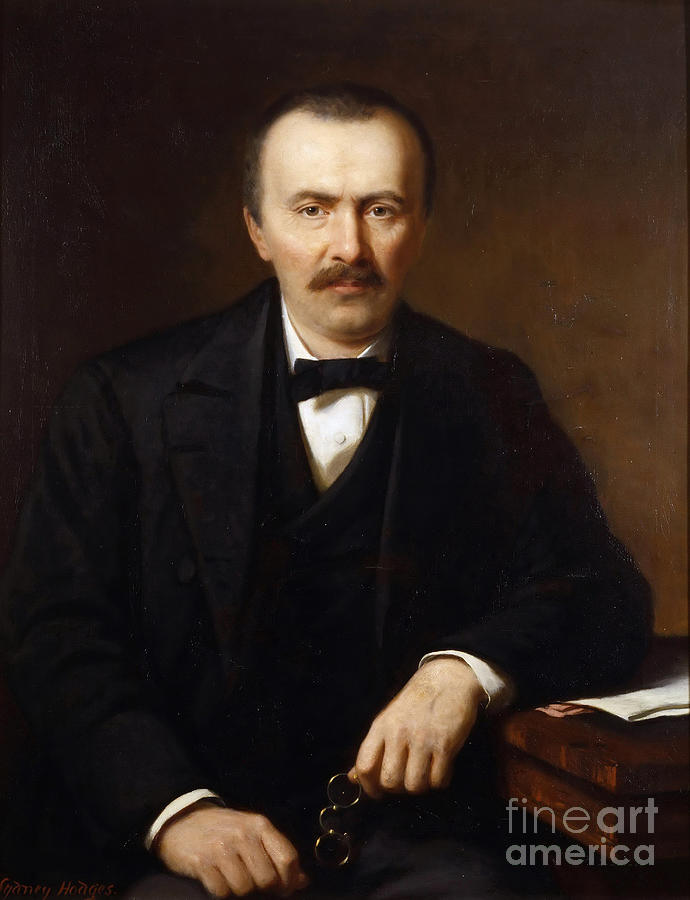
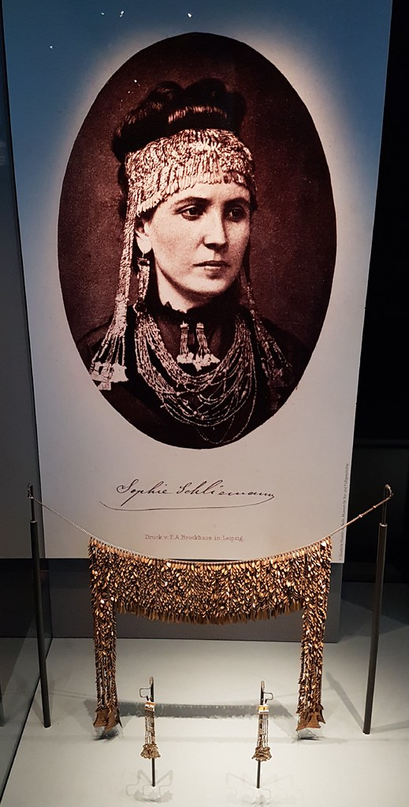
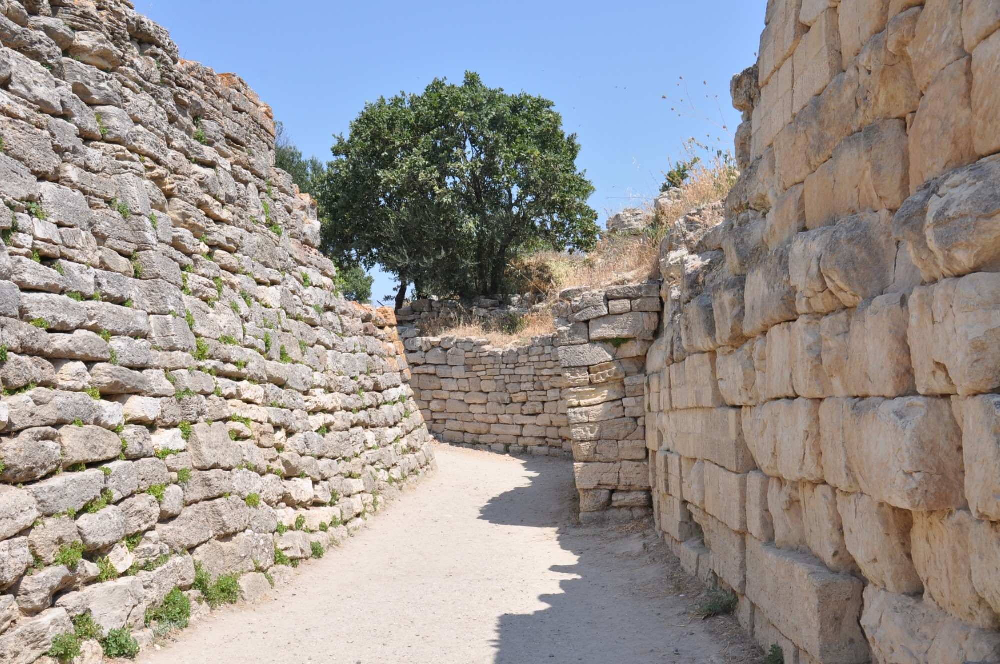

Durante casi dos mil años, Troya fue solo poesía: la ciudad que Homero incendió en la Ilíada, escenario de la ira de Aquiles y el caballo de Ulises. Nadie sabía si había existido, ni dónde. Eso cambió en 1870, cuando un comerciante alemán obsesionado con Homero empezó a cavar una zanja de catorce metros en un montículo turco llamado Hisarlik.
Lo que encontró —y lo que destruyó en el proceso— desató siglo y medio de excavaciones, escándalos de contrabando y disputas académicas que todavía no terminan. Hoy sabemos que hubo una ciudad real en ese lugar, ocupada casi sin interrupción durante cuatro mil años. Lo que sigue sin estar claro es cuánto de la guerra que describió Homero ocurrió de verdad.
Este artículo reconstruye esa historia doble: la de la Troya que canta la épica, y la de la Troya que la arqueología fue —capa por capa, y a veces a dinamitazos— sacando a la luz.
Troya en la épica homérica
La Ilíada, atribuida a Homero (siglo VIII a.C.), narra un fragmento de un asedio de dieciocho meses librado por los aqueos contra Ilión —Troya— por los griegos. El poema se concentra en episodios militares y humanos —la ira de Aquiles, los duelos de héroes— y da por hecho que su audiencia ya conocía el contexto de la guerra completa.
La toponimia encaja de forma llamativa con Hisarlik: un monte al sur de una llanura, cerca de rutas comerciales entre el Egeo y el mar Negro. Pero la historicidad exacta del relato sigue en disputa. En el nivel que hoy se asocia con la "Troya homérica" no hay evidencia de un asedio sostenido durante diez años, lo que sugiere que esa cifra es simbólica, no literal. Aun así, la Ilíada fue —literalmente— el mapa del tesoro que llevó a los primeros excavadores hasta el lugar correcto.
Schliemann: el tesoro y el escándalo
Desde el siglo I a.C., el geógrafo Estrabón ya había propuesto que la Troya real no podía ser Bounarbashi —el sitio tradicionalmente aceptado— sino un montículo más cercano a la llanura. Nadie confirmó esa intuición durante casi dos mil años, hasta que el arqueólogo aficionado británico Frank Calvert, dueño de tierras en Hisarlik, convenció al comerciante alemán Heinrich Schliemann de financiar una excavación.
En abril de 1870, Schliemann inició los trabajos con métodos hoy considerados desastrosos: una zanja a cielo abierto de catorce metros de profundidad, cavada por entre ochenta y ciento sesenta hombres sin formación arqueológica. Descartaba sistemáticamente cualquier capa que consideraba "posterior" a la Troya de Homero, destruyendo estratos enteros sin documentarlos.
{kind=link}

{kind=link}

En 1873, en el llamado "Nivel II" del montículo, Schliemann encontró un tesoro de oro y objetos de lujo —más de 8.000 piezas: diademas, cadenas, vasos— que bautizó "Tesoro de Príamo". Estaba convencido de que confirmaba la Ilíada. Hoy se sabe que Troya II es mil años anterior a la guerra homérica: el tesoro se dató hacia 2200 a.C., muy anterior a cualquier posible Aquiles o Príamo.
Las prácticas de Schliemann generaron escándalo en su propio tiempo. Sacó el tesoro de contrabando a Alemania y el gobierno otomano lo demandó por exportación ilícita; huyó a Grecia, donde continuó excavando en Micenas. Su esposa Sofía —protagonista de la célebre fotografía con la diadema de oro— ni siquiera estaba presente en el sitio durante el hallazgo, algo que el propio Schliemann admitió haber exagerado.
Dörpfeld y Blegen: llega el rigor
Tras la muerte de Schliemann en 1890, su colaborador Wilhelm Dörpfeld, arquitecto de formación, corrigió la numeración estratigráfica y aplicó un método más riguroso. Identificó que Troya VI (c. 1700–1300 a.C.) correspondía a una ciudad fortificada con un megaron central y murallas de hasta cinco metros de espesor —y propuso que esa era la ciudad de Príamo, la que Schliemann había atravesado y destruido sin saberlo al buscar demasiado abajo.
En los años treinta, la Universidad de Cincinnati, a cargo de Carl W. Blegen, retomó las excavaciones con un marco plenamente profesional. Blegen concluyó que la destrucción de Troya VI probablemente se debió a un terremoto hacia 1250 a.C., no a una guerra. Pero al examinar el nivel siguiente —Troya VIIa (c. 1300–1180 a.C.)— halló evidencia inequívoca de conflicto bélico: puntas de flecha de influencia micénica incrustadas en los muros, esqueletos humanos sin enterrar, edificios incendiados y refugios improvisados dentro de la ciudadela.
Korfmann: la ciudad quince veces más grande
Entre 1988 y 2005, un proyecto internacional alemán-turco dirigido por Manfred O. Korfmann (Universidad de Tubinga) cambió por completo la escala del problema. Usando sondeos geofísicos y catas extensas en la llanura circundante, el equipo demostró que más allá de la acrópolis —lo único que se había excavado hasta entonces— existía una amplia ciudad baja: calles, casas, talleres, rodeados por un foso fortificado en forma de U de 3,5 metros de ancho.
El hallazgo fue radical: Troya cubría unas 75 hectáreas, quince veces más de lo que se pensaba. Dejaba de ser una simple fortaleza en la cima de un montículo para convertirse en una ciudad-estado compleja, nodo comercial entre Anatolia, los Balcanes y el Egeo — exactamente el tipo de premio que justificaría una guerra en la tradición homérica.
{kind=link}

👤Debate académico posterior a Korfmann"La reconstrucción de la ciudad baja generó tanto respaldo como una crítica dura: otros investigadores la consideraron una extrapolación 'infundada y ficticia' más allá de lo que sostienen los datos."
Los nueve niveles de Troya
Hisarlik no es una sola ciudad sino nueve, apiladas una sobre otra a lo largo de casi cuatro mil años de ocupación casi continua, desde la Edad del Bronce Temprano hasta la época bizantina.
| Nivel | Período aproximado | Qué representa |
|---|---|---|
| Troya I–III | 3000–2100 a.C. | Primeras culturas egeo-anatolias |
| Troya IV–V | 2100–1700 a.C. | Fase intermedia, rasgos de Anatolia central |
| Troya VI | 1700–1300 a.C. | Ciudad fortificada de mayor esplendor — fin por terremoto |
| Troya VIIa | 1300–1180 a.C. | Candidata principal a "Troya homérica" — destruida por guerra |
| Troya VIII | 700–85 a.C. | Asentamiento griego arcaico y clásico |
| Troya IX | 85 a.C.–500 d.C. | Presencia romana |
| Troya X | Siglos XII–XIII d.C. | Breve ocupación bizantina tardía |
¿Hubo realmente una guerra de Troya?
La "verdad" del yacimiento no depende de que la guerra homérica haya ocurrido tal como la cuenta la Ilíada: incluso sin Troya VIIa, los hallazgos confirman cuatro mil años de ocupación continua y la importancia estratégica de Hisarlik como enclave entre el Egeo y el mar Negro. Pero la coincidencia entre una destrucción violenta bien documentada y una cronología compatible con la tradición mítica sugiere que sí existe un núcleo histórico detrás del mito.
Quedan preguntas abiertas que probablemente nunca se resuelvan del todo: ¿cuánto de la Ilíada es memoria real y cuánto invención poética? ¿Fueron los atacantes micénicos, como sugiere la tradición, o hubo varios ciclos de conflicto menores que la épica fundió en una sola guerra? El mito del caballo de madera, por ejemplo, no deja ningún rastro material — pertenece por completo a la tradición literaria, no al registro arqueológico.
// Para llevarse de este artículo
- Troya es un yacimiento real, con casi cuatro mil años de ocupación documentada en Hisarlik, Turquía.
- El "Tesoro de Príamo" que hizo famoso a Schliemann es mil años más antiguo que la guerra que él creía haber confirmado.
- La evidencia de guerra —flechas, incendios, cuerpos sin enterrar— es real y corresponde al nivel VIIa, hacia 1250 a.C.
- El caballo de madera, la ira de los dioses y los diez años de asedio pertenecen al terreno de la épica, no al del registro material.
Fuentes
-
Schliemann, H.Ilios: the city and country of the TrojansMemoria de excavación de primera mano del propio Schliemann sobre las campañas iniciales en Hisarlik.
-
Blegen, C. W.Troy: results of the first six seasons of excavationInforme de las excavaciones de la Universidad de Cincinnati que identificaron la evidencia de guerra en Troya VIIa.
-
Korfmann, M. O. — Archaeology 57(3)Was there a Trojan War?Síntesis del propio Korfmann sobre los hallazgos de la ciudad baja y su interpretación del yacimiento.
-
Latacz, J.Troia und Ilion: Studien zur StadtgeschichteEstudio de referencia sobre la historia urbana de Troya y su relación con la tradición homérica.
-
UNESCO World Heritage CentreArchaeological Site of TroyCronología y valor patrimonial reconocido del yacimiento, declarado Patrimonio de la Humanidad en 1998.
-
Museo de Troya, ÇanakkaleHistoria del yacimiento y niveles de ocupaciónResumen oficial de los nueve niveles arqueológicos de Hisarlik, usado como referencia para la tabla comparativa de este artículo.
-
Anales CIEC/INCUAPA (Argentina)La Troya homérica: de Schliemann a KorfmannRepaso en español de la historia arqueológica reciente del yacimiento, incluyendo el debate posterior a Korfmann.